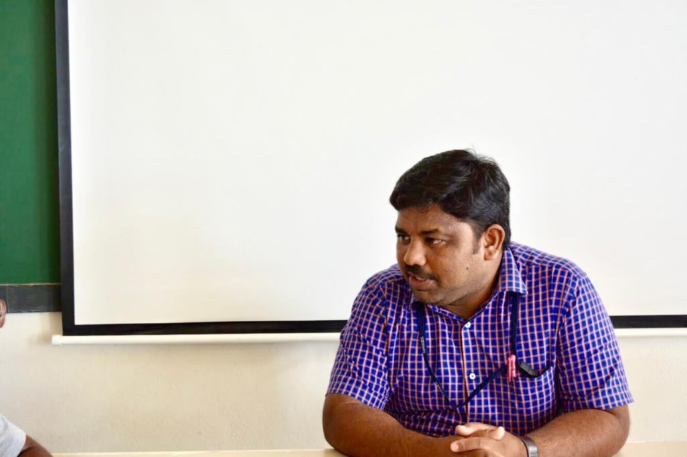

THANIMA MATHEN
The Interact club is a group of CHIRECians engaged in exemplary works of giving. They aim to share joy in the world through selfless acts of kindness. This would not have been possible without the support and encouragement Nagulmeera Sir, the coordinator of the club and Maulika Desai of 11D, the president.

Picture credits: Tanisha Marda.
The following are a few questions asked during an interview with Nagulmeera Sir, Maulika Desai(President of the Interact club) and Ayushi Jha(Board member of the interact club):
Q. How do you think being a part of this club helps students?
Being an in charge for 5years, I believe that the students who are a part of this club will grow as better individuals. They will develop good problem-solving skills and enhance their critical thinking. Students will also become good planners and strategize well. The Interact Club also conducts Club Service sessions which are very helpful.
Q. What characteristics are enhanced in members, as students, as part of the interact club?
Students will enhance many important virtues like self-discipline, good leadership and being a team player. Being friendly and flexible are key traits of a great volunteer. They will improve their financial planning as they deal with money management. Analytical skills are also enhanced in members as part of the interact club.
Q. As someone very involved in the club, how do you like to encourage its members?
Conducting brainstorming sessions month-wise help in discovering new ideas. I also support students with finance. I help coordinate and organize all the events.
Q. What do you predict the future scope of the club to look like? What are your expectations?
A. There has been a significant increase in the enrollment of students for the club. From 30 to 40 students, the interact club now has about 185 students. In 2017 The Interact Club won Best Club Award following their victory with an Outstanding Club award. I predict that the performance of this club will continue to strive.
Q. What inspired you to join the club?
I was chosen to be a Board member the previous year and prior to this had no idea about the club. It was a very considerate thought which helped give back to society. Happiness is a priceless gift.
Q. As president, have you set any goals for the year? If so what are they?
The ultimate goal of the Interact Club is to give back to society and bring smiles on the faces of many. The club not only provides them with their requirements but also spends quality time with them and most importantly enjoys the time together.
Q. What is your view on the club’s morals along with their working? How do you want to change them?
When the club gives, they reap the joy of seeing a bright smile, laughter and gratitude for life. We have succeeded in planning an event every month and look for opportunities where they can give and help others. I strongly believe in the joy of giving. I would not change the working of the club or its morals.
Q. Has being part of the club changed you as an individual? How?
Being part of the club helped me grow into a better person. I realized how thankful and grateful I should be for what I have. It reminded me of all my duties and responsibilities that I should fulfil. It also enhanced my virtues and taught me to be a selfless person.
Q. Describe your experience as a member so far?
It has been such an enriching experience and at the same time fun-filled. It taught me to be acceptable of all circumstances and showed me that it is important to find joy in the smallest of things. Selfless giving becomes very overwhelming and the greatest reward is to see the faces filled with joy and content.
Q. What do you hope to see from the club in the future?
I would love to see the Interact Club reach heights and spread happiness everywhere. I also highly encourage everyone to lend a hand and donate even if it is in the smallest way possible. I strongly believe in giving more if one has more.
An Initiative by CHIREC International CBSE
THE ECHO 2019
Coded by
Aashish Kalidindi